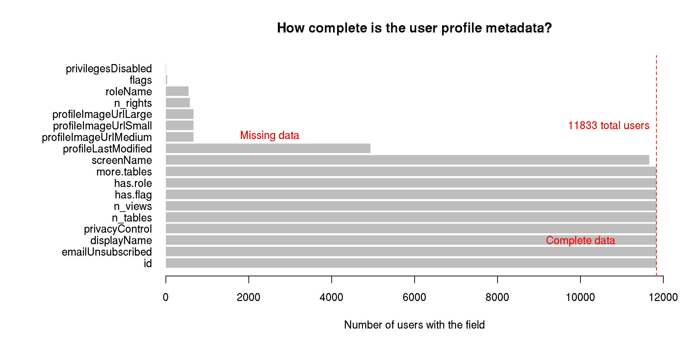
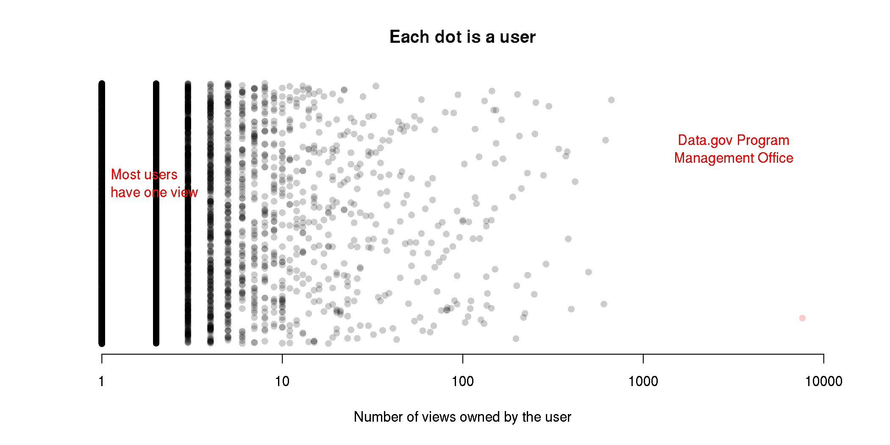
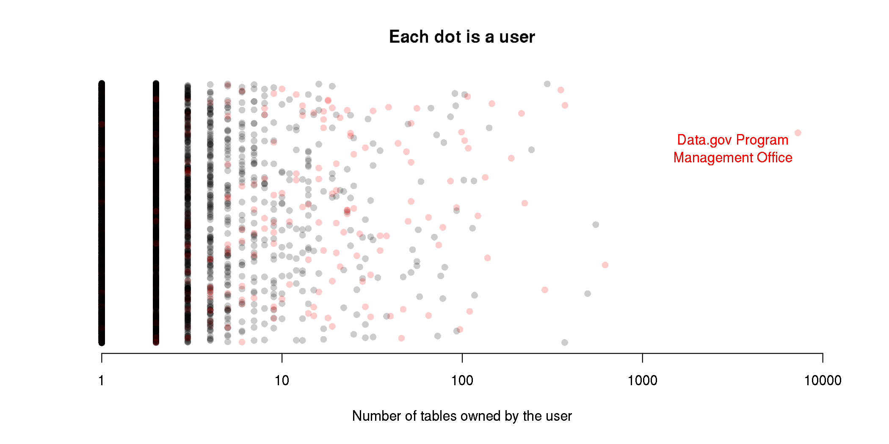
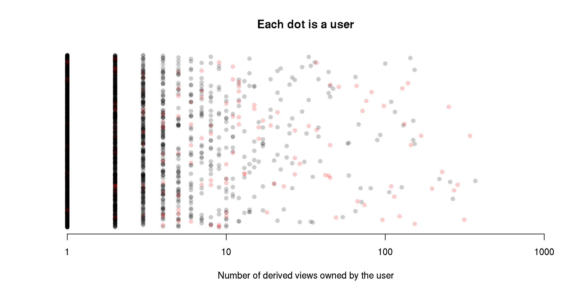
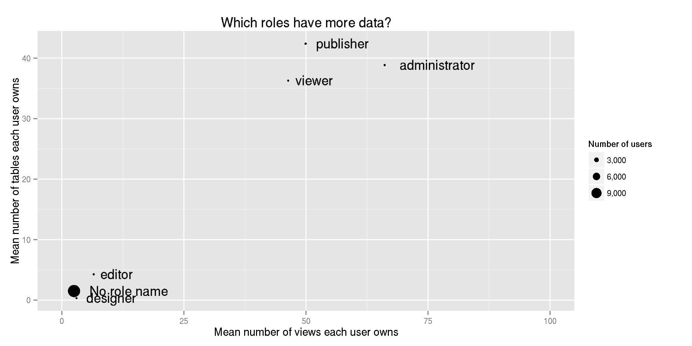

Who uses Socrata's in-browser charting features?
I recently downloaded the metadata files for all of the datasets on all of the Socrata portals (for a particular definition of “all”). And then I remembered that these datasets don’t just float in space; people use them.
Through this study of Socrata data portals, I’ve learned that Socrata is much more than a website for converting datasets into different formats and serving them on the web. Socrata “consumerizes the data experience” with web-based mapping and charting tools. Here’s a sexy video they made.
I live in this bubble of people who know how to use computers, so Socrata’s charting tools seem really clunky and stupid to me, but it turns out that these clunky tools can be outrageously useful people who aren’t strange like me.
Nicole Neditch told me of one instance where someone in the Oakland government made a pie chart in the Socrata data portal and embedded that in a blog. If Oakland hadn’t been using Socrata, the result probably would have been less exciting; Nicole said that the person probably would have made a chart in Excel, exported that to a PDF and added a download link.
I wanted to find more people like this. That is, I want to see how people’s approach to analysis changes because of these web-based analysis tools that are strongly integrated with both the data being analyzed and with web-based presentation formats.
My first post looked at popular datasets, and my second post looked at big dataset families. In this third post, I look at people who use Socrata as an analysis tool.
The user data format
In order to do this analysis, I’m going to take user data from Socrata, and this involves learning more about Socrata’s API.
I’m still using the same 80,000 JSON files that I downloaded last month. Each of these metadata files describes a Socrata view. Some of these JSON files are duplicates (because of federation), so there are only about 50,000 unique views. (And the other 30,000 are exact duplicates, so deduplicating was easy.)

Among the many fields in each JSON file are
fields are two fields related to the people who interacted with that view.
These fields are the owner and tableAuthor fields. These fields are
both hashes/dictionaries/arrays with user information. For example, here’s
mine.
{
"id" : "x73b-9d8f",
"displayName" : "Thomas Levine",
"emailUnsubscribed" : false,
"privacyControl" : "login",
"profileImageUrlLarge" :
"/images/profile/0252/1851/govlab-experiment_large.jpg",
"profileImageUrlMedium" :
"/images/profile/0252/1851/govlab-experiment_thumb.jpg",
"profileImageUrlSmall" :
"/images/profile/0252/1851/govlab-experiment_tiny.jpg",
"profileLastModified" : 1374508383,
"screenName" : "Thomas Levine"
}
Owner
The owner field is quite straightforward; it’s simply the person who
created the view, be it a
dataset,
filtered view,
chart or
whatever.
Table Author
The tableAuthor field is the person who uploaded the
table (source data) associated
with the view. For datasets, this is the same as the owner, but for charts,
maps and filtered views, it might be different; one person may have uploaded
the data, and another person might have made the chart. “view”, “dataset”,
“map”, “chart”, “filtered view” and “table” all have rather special meanings
inside Socrata, so you should read my post on that
if the previous sentence didn’t make sense.
Extracting the user data
I already had a system for storing all of the Socrata metadata, so I just needed to write a sloppy function to query it. This resulted in an SQLite3 database, which I converted to a CSV file and read into R.
Data summary
The user data frame schema looks like this. (Ignore this block of gibberish if it scares you.)
str(users)
## 'data.frame': 11833 obs. of 18 variables:
## $ id : chr "wivw-ajwk" "6b59-fhhh" "vigz-pjyi" "abb4-qtmc" ...
## $ emailUnsubscribed : int 0 0 0 0 0 0 0 0 0 0 ...
## $ displayName : chr "Rory Martin" "Roman Russia" "svelz" "Tobit Sibol" ...
## $ privacyControl : chr "login" "login" "login" "login" ...
## $ n_tables : int 1 1 0 1 1 2 2 1 1 0 ...
## $ n_views : int 1 1 2 1 1 221 2 1 1 1 ...
## $ screenName : chr "Rory Martin" "Roman Russia" "svelz" "Tobit Sibol" ...
## $ profileLastModified : Date, format: NA NA ...
## $ profileImageUrlMedium: chr NA NA NA NA ...
## $ profileImageUrlSmall : chr NA NA NA NA ...
## $ profileImageUrlLarge : chr NA NA NA NA ...
## $ n_rights : int NA NA NA NA NA NA NA NA NA NA ...
## $ roleName : chr NA NA NA NA ...
## $ flags : chr NA NA NA NA ...
## $ privilegesDisabled : int NA NA NA NA NA NA NA NA NA NA ...
## $ has.flag : logi FALSE FALSE FALSE FALSE FALSE FALSE ...
## $ has.role : logi FALSE FALSE FALSE FALSE FALSE FALSE ...
## $ more.tables : logi FALSE FALSE FALSE FALSE FALSE FALSE ...
Missing data
Not everyone had all of the fields.

In particular, hardly anyone had flags, a profile image, rights or disabled privileges.
How many views do people have?

Most users (7790 to be exact) have exactly one view. Actually, there are probably even more with no views, but I don’t have the data on them.
That red one way off to the right is the Data.gov Program Management Office, with 7618.
How many tables?
Let’s make that same plot but for the number of tables. (A table is a raw uploaded dataset, before any view filtering. A table can have many views, and a view has only one table.) In this plot, I colored administrators and publishers red.

That point off to the right is again the Data.gov Program Management Office.
How many derived views?
When you upload a tabular data file to Socrata, Socrata creates a “table” and a “dataset” view on that table. When you filter a view inside Socrata, Socrata creates a new view but no new table. Thus, the difference between number of tables and number of views tells us how many derived views people have made. I think.

It also turns out that 65 users have more tables than views. This appears to be mostly publishers. Maybe this is something about how the import API works that I don’t understand.
Aside from data publishers and Socrata employees, who uses Socrata a lot?
I wanted to find people who have used Socrata a lot without being employed by Socrata or data-publishing governments. I started out by trying to separate employees of Socrata and data-publishers from everyone else. That was a bit harder than you might expect.
More tables than views
As I mentioned earlier, I didn’t realize that it was possible to have more tables than views. How does that happen?
An example
One case is rseel. He is the author behind a private table, and Cam Caldwell, who works for Socrata, made this view based on that table. So some of the situations where people have tables but no views might occur because of private views; the original dataset is private, and some views on that dataset are public.
We care about this because this might be a way of identifying people who work for data publishers. Considering that this private dataset is posted on Oregon’s portal and that a Socrata employee made a view based on it, I suspect that rseel works for Oregon, or maybe Socrata.
More users like this
I looked at more of the users who had more tables than views.
subset(users, n_tables > n_views)[c('displayName', 'roleName', 'flags', 'n_tables', 'n_views')]
I looked up a few of them with a search engine, and they mostly seem to be government employees. So I think I can count people as employees of data publishers or Socrata if they have more tables than views.
Role names
I noticed that most of the people in the above list have
roleName fields. Very few people have roleName fields, so
I think that people tend to have a roleName field
if and only if they work for data publishers. To investigate that,
let’s look at the number of views that each person owns by the different
roles of user.

It looks like publishers and administrators make more views. Big surprise. Moreover, few people have roles, and people with roles tend to have more data than people without roles. This supports my suspicion that people with roles are data publishers. To test that a bit more precisely, let’s compare that to my other suspected indicator of data-publisher-ness: Whether people have more tables than views. Here’s a plot of that.
If we want to get all statistical about it, we can run Fisher’s Exact test.
fisher.test(table(users$n_tables > users$n_views, users$has.role))
##
## Fisher's Exact Test for Count Data
##
## data: table(users$n_tables > users$n_views, users$has.role)
## p-value < 2.2e-16
## alternative hypothesis: true odds ratio is not equal to 1
## 95 percent confidence interval:
## 35.69 118.94
## sample estimates:
## odds ratio
## 63.77
and find that these counts are indeed disproportionate.
This is all to say that roleName appears to be a decent indicator for “data publisher”.
Flags
In a similar vein, I looked at Socrata users with a flags field.
35 users have a non-empty flags field, and
the value of that field is ["admin"] for all of these users.
Here are those users.
users$has.flag <- !is.na(users$flags)
subset(users, has.flag)["displayName"]
## displayName
## rgff-7jh6 Doug McLeod
## g4md-3inp chitang
## rqdg-xj2v Clare
## p2g6-hzkg Anthony Nowell
## 2bbf-kmrb Marc Millstone
## 83hr-92mi Kevin Merritt
## xpic-k57b Chris Whong
## b5e4-d7x8 Jordan
## hmzy-ctip Clint Tseng
## xtsj-wzxh Roopa Prakash
## 4xtm-veev MIchael Chui
## i7d8-sc4w Chris Metcalf
## 86uf-6gqx beth.blauer
## tm4c-rqum Lilia Gutnik
## 2fra-n3vu John Kew
## rj6s-jsfr Will Pugh
## e9wa-d5y6 Giacomo Ferrari
## ipyd-bu8g Adrian
## x5jh-tg6w Hiko Naito
## 4tjb-bgqg Anna Veldt
## 4qwc-qq8v kfontes
## mvvk-izrz Jeff Scherpelz
## iwnv-rtc2 Karin Hellman
## 8est-2umm Sells
## 54cf-cqm2 Joe Pringle
## 7ef3-v99y Paul Paradise
## nux4-azwn bryantlau
## gyd7-94dj mlouie
## 8vin-pcrv amy winner
## eudm-snef Saf
## bxv9-y9sr rjm
## r5m2-5pds Cam Caldwell
## tjtx-bges anu
## zs8p-j3v5 Darrell Cabales
## vcvp-yass Dylan
These appear to all be Socrata employees.
Hmm. Does anyone have both a roleName and a flag?
subset(users, has.flag & has.role)[c("displayName", "roleName")]
## displayName roleName
## 86uf-6gqx beth.blauer administrator
## nux4-azwn bryantlau administrator
Beth
and Bryant are both
Socrata employees. I don’t know why they have roleName fields.
Anyway, it looks like the flags field is a decent indicator for “Socrata employee”.
Ordinary citizens
If having a flags field means you work for Socrata and
having a roleName means you work for a data publisher (a government, usually),
then maybe people with neither flags nor a roleName are the
citizens that Socrata is trying to empower.
No flags, no roles
Here are some users with neither flags nor roles.
citizens <- subset(users, !has.flag & !has.role)
columns <- c("displayName", "n_tables", "n_views")
head(citizens[order(citizens$n_views, decreasing = T), columns])
## displayName n_tables n_views
## vc35-nh3p Public Datasets 496 605
## v4c9-bc9b cpbride 242 498
## ugen-sv2k Scott 3 372
## w3yb-tyrd admin 296 340
## yahm-crqu U.S. Environmental Protection Agency 14 280
## rek6-gcru Sam S. Lee 2 221
Hmm okay they’re not all ordinary citizens. For example, “Public Datasets” appears to be recovery.gov’s open data initiative, which is running on opendata.socrata.com rather than on a separate portal.
Also no tables
Maybe we should also expect citizens not to have uploaded any tables.
citizens <- subset(users, !has.flag & !has.role & n_tables == 0)
head(citizens[order(citizens$n_views, decreasing = T), columns])
## displayName n_tables n_views
## jyr3-c2kp Njbate 0 153
## cif6-aywu CPHA 0 150
## teh5-ns3w Kenya Open Data Bot 0 144
## 4p9m-76ij Tracy 0 100
## edap-jnwh warren.kagarise 0 93
## aeze-ppu4 NL 0 89
Now we’re getting somewhere.
Njbate made a bunch of filtered views on the FEC Contributions dataset.
CPHA made a bunch of filtered views on the Baltimore 311 request dataset.
The Kenya Open Data Bot made a bunch of charts on a few different datasets. These charts are quite popular, and they account for a quarter of Kenya’s open data portal.
Anyway, I see a pattern here: Users with the most views just made different filters on the same dataset.
With a profile image
Let’s try this yet again, but this time, let’s look only at people with profile images.
citizens <- subset(users, !has.flag & !has.role & n_tables == 0 & !is.na(profileImageUrlLarge))
columns <- c("displayName", "n_tables", "n_views")
head(citizens[order(citizens$n_views, decreasing = T), columns], 10)
## displayName n_tables n_views
## aeze-ppu4 NL 0 89
## 732w-crxq not The White House 0 30
## 86yi-jydw VinylFox 0 26
## ef7y-9vvy Dave Francis Rodrigues 0 25
## pieh-8cyx Michael Christopher 0 21
## v8wk-qcyk MrDataFerret 0 8
## fcg6-n5gt David T. Andrews 0 7
## dpze-sudn prasannalaldas 0 6
## aj2c-kiyh Mitali Kumar Mathur 0 4
## e83w-vpb9 nolewalkingshaw 0 4
I ran queries like this to find what portals and data they used.
subset(socrata, owner.id == 'aeze-ppu4')[c('portal', 'id', 'tableId', 'name', 'viewCount')]
table(subset(socrata, owner.id == 'aeze-ppu4')$portal)
They look more like real people doing real analysis.

not The White House is “[w]ay more open and transparent than the official White House website.” It’s another account that’s just making filters on one dataset, but they’re a bit more creative, diverse and involved. Here are some of her popular views.
- People who went on the West Wing tour
- People who played basketball at the White House
- Secret Service BBQ
not The White House also has its own separate website, whitehouse.gov1.info, which is a parody of the official White House website.

NL used to do a lot with World Bank data, though she hasn’t for a few months.
She also has some views on databox.worldbank.org, which didn’t show up in my list of Socrata portals.

VinylFox has also made a bunch of interesting filters on Baltimore data. His website discusses this a bit more.

Dave has made a lot of filters and charts about India. He also names his views really well. In particular, I like his hack of prefixing all of the titles with “Dave_”; this gets around how Socrata doesn’t make it particularly clear who created the view that you are looking at.
Everyone else
I looked at a few specific Socrata users who are doing interesting things, but let’s look a bit more broadly. The histogram below shows how many views users have created. Here, I’m including people without profile pictures.
Here it is again, but leaving out the top ten users to make it easier to see.
As you might expect, most people make only one view. In fact, there are probably even more users with no views.
I’m more concerned with the right side of the graph. As we should expect, far fewer people have made 10 views than 1 view. But look at the absolute counts. Only 411 users have made at least 10 views. Keep in mind that this includes all of the users who have made a public view on any of the 60 portals; this number seems quite low.
Also keep in mind that that’s all of the users with at least 10 views; if we look at only the users whom I’ve identified as citizens, it drops to 38, or fewer than one user per portal. Quite low.
Conclusions, lessons, ideas, &c.
API documentation
Most of my work on this is still just in figuring out what the API fields mean and documenting them. Some of you reading this are probably building developer APIs, so keep this in mind: If you don’t document your API fully, some random person might come along and document it for you, which might be highly embarrassing and/or highly convenient.
Now on to some more serious conclusions.
Big users
I looked for users that published a lot of views.
Unsurprisingly, data publishers create lots of views. And Data.gov is crazy.
Aside from data publishers, there are a few accounts that make lots of filters on the same dataset. These accounts might be bots; one of them is even called the “Kenya Open Data Bot”.
I found some accounts (not The White House, NL, VinylFox and Dave Francis Rodrigues) that are making lots of diverse filters and maps with Socrata in study of a particular topic. These are examples of the “consumerized” data analysts that Socrata is trying to create.
One portal
Publishing a lot of views isn’t the only thing that means that you use Socrata a lot. Wouldn’t it be cool if people were connecting lots of different datasets from all over the place?
Very few of the big users that I discuss above use more than one Socrata portal. This certainly makes sense as Socrata open data portals are presented as if they’re separate installations of the software. You can use the same account for all of the portals, but there’s no obvious way to search across portals or get a list of all of the portals.
I wonder whether people would use data from multiple portals if it were easier to search across portals. I think someone should set up a Socrata portal that federates all of the other portals; maybe people would use Socrata Open Data Portal software differently if they could easily collect and analyze data from all of the portals.
On the other hand, maybe they wouldn’t. A couple of the bigger users I found were using World Bank data, and it’s quite possible that the data in the other portals aren’t that relevant to them.
People don’t use Socrata that much.
If people are using Socrata’s data analysis tools, we should expect lots of views to be created. But I didn’t find that many views.
Searching across all of the portals, I found fewer than 500 users with at least 10 views. This is less than ten such users per portal, which doesn’t seem like a lot. And almost all of these users are data publishers or Socrata employees, so hardly any citizens seem to be analyzing Socrata data.
Or do they?
Maybe they’re using the data and just not using Socrata’s analysis tools.
People do what they know.
I think that people get good at one way of using computers and then never learn other ways. (I credit this theory to Alec Story.) This applies for my former neighbor who could check her email just fine with the old email software but got confused when she got a new computer with a new version of the email software. This also applies for people like me who are stuck using R because they know all sorts of magical R incantations even though they know that R is completely insensible.
People already know Excel.
Getting back to Socrata, I suspect that people are using the Socrata data to some degree but that they’re downloading the dataset manually analyzing it in Excel.
If this is what is happening, it would be really cool to have stronger integrations between Excel and Socrata. Currently, you just download a view in Excel format and then open it. What if there were an Excel macro that would synchronize a table in Excel with a view in Socrata? Or a plugin that would let you upload reports from Excel back to Socrata?
Before you get excited, note that I don’t really have any idea of whether this is what’s happening. It would be cool to test this suspicion, but I haven’t yet come up with a good way of doing that.
Maintaining the openness of data
If people are analyzing open data in Excel and then disseminating the findings as paper documents, then we’re not maintaining the openness of the data. There are a lot of situations where the analyst wants the analysis to stay private, but there are also a lot of situations where the analyst would love to share the analysis publicly if only it were easier.
Much focus in open data is on opening existing silos on data. Let’s also think about how we can prevent data from becoming siloed in the first place.
A request for data
I managed to find a few interesting users, but I’m somewhat disappointed. The available data are quite coarse, and few variables are exposed.
On the other hand, portal administrators have do have access to these data! If you run a portal, you should be studying these usage data in order to understand what data people are using, how people are using it and how you can improve your open data offerings. Even better, you should just open the usage data like Oregon did so I can do this for you.
If you administrate a portal, I want you to make your analytics page public. And if you don’t administrate a portal, I want you convince your local portal administrator to. It’s just one box in administrator dashboard that you need to click.
Open data!